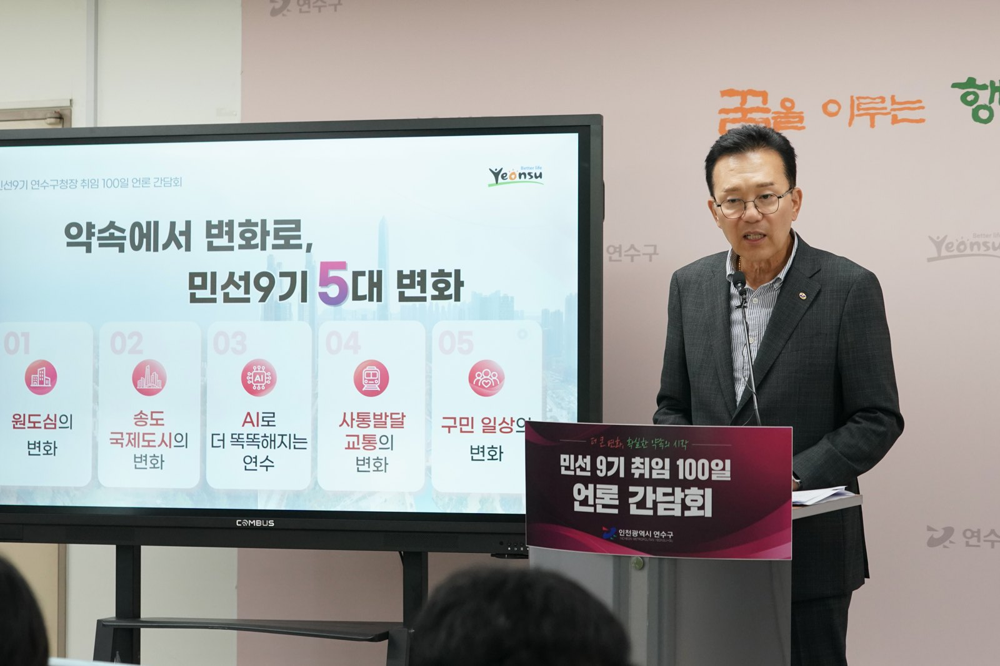
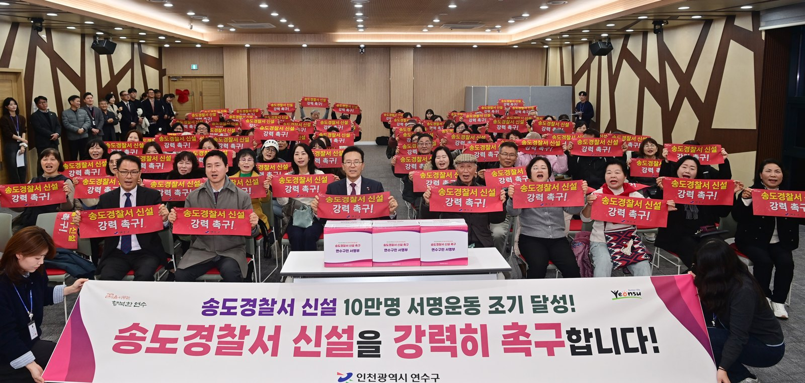

송도 분구 신중론에서 행정체제개편팀까지, 연수구 1년 10개월
송도 22만7253명, 연수구 인구 55%
인구 50만 기준 미달, 법안 2년 넘게 소위
AI경제저널=김갑봉 기자 | 2026년 11월 2일 인천 연수구 제2청사 송도행정팀이 행정체제개편팀으로 이름을 바꿨다. 연수구는 이 팀에 송도 분구 추진 지원 업무를 새로 맡겼다. 송도 분구는 송도국제도시를 연수구에서 떼어 별도 자치구로 만드는 일이다.
1년 10개월 전 이재호 연수구청장은 송도 분구론에 선을 그었다. 2025년 1월 16일 신년 기자간담회에서 송도 분구론을 「인기영합적 정치 행위」라고 비판했다.
그사이 인천은 31년 만에 행정체제를 바꿨다. 2026년 7월 1일 제물포구·영종구·서해구·검단구가 문을 열어 인천은 2군 9구가 됐다. 송도구는 그 명단에 없었다. 송도 분구를 둘러싼 연수구 입장도 바뀌었다.

2025년 1월의 신중론
이 구청장은 당시 정치인들이 마구잡이식 인기성 발언을 자제해야 한다고 말했다. 부평구와 서구 분구도 인구가 아니라 도시 구조 변경 때문이었다고 짚었다. 특별자치구 논의는 국민도 믿지 않을 것이라고 했다.
송도 행정 구조도 문제로 들었다. 연수구가 맡은 송도 사무는 다섯 가지이고 나머지는 인천경제자유구역청이 맡는다며 「기형적 형태」라고 했다.
분구를 따질 때 지방세 수입만 보지 말고 도시 관리비용도 따져야 한다고 했다. 분구 찬성 쪽은 반발했다. 송도시민총연합회 등 주민단체 3곳은 1월 20일 합동 성명을 냈다.
주민단체는 「1구 2도시」 체제 한계를 짚었다. 원도심은 지역 특성에 맞는 행정을, 송도는 국제도시에 걸맞은 행정을 펼쳐야 한다고 주장했다.
제1호 제안서와 행안부 건의
재선한 이 구청장은 2026년 6월 8일 기자회견에서 연수구 중점 사업 첫머리에 송도 분구를 올렸다. 연수구는 인천시장 당선인에게 줄 5대 현안 제1호 제안서도 만들어 7월 1일 전달하기로 했다.
연수구가 10월 14일 밝힌 제안서 내용을 보면 첫 항목이 송도구 신설이다. 행정 체계 로드맵 마련과 핵심 행정 권한 사전 이양을 인천시에 요청했다.
이 구청장은 7월 14일 정부서울청사에서 행정안전부 장관에게 정책 건의문을 전달했다. 국제도시 특성을 반영해 분구 기준을 고쳐 달라는 요청이 담겼다.
연수구는 영종구·검단구 신설처럼 송도구도 지역 여건과 행정 효율을 함께 따져 달라고 했다. 이 구청장은 행정·치안 체계 구축을 더 미룰 수 없다고 말했다.
송도 인구 22만7253명
연수구 주민등록 인구는 2026년 10월 기준 41만649명이다. 송도1~5동이 22만7253명으로 55.3%를 차지한다. 원도심 10개 동은 18만3396명이다(연구소 계산).
2024년 12월 기준과 견주면 송도는 21만2364명에서 1만4889명 늘었다. 같은 기간 원도심은 18만7849명에서 4453명 줄었다(연구소 계산).
2024년 10월 문을 연 연수구 제2청사는 2026년 9월 말까지 민원 20만8965건을 처리했다. 여권 접수가 4만599건이다.
연수구는 11월 2일 조직개편으로 송도 교통시설과 공동주택·건축물 관리 업무를 본청에서 제2청사로 옮겼다. 송도교통시설팀과 송도건축관리팀을 새로 만들었다.
연수구는 11월 26일 송도경찰서 신설 서명에 10만1383명이 참여했다고 밝혔다. 구는 송도 인구가 외국인을 포함해 약 23만명이지만 연수경찰서 한 곳이 연수구 전체 약 44만명 치안을 맡는다고 설명했다.

인구 50만 기준과 연구원 진단
인천연구원은 2023년 12월 인천시 행정체제 개편 연구 보고서를 냈다. 보고서는 현행 법규에 자치구 설치 기준이 명시돼 있지 않다고 적었다.
보고서가 소개한 행정안전부 행정구역 실무편람 판단 요건은 둘이다. 하나는 기존 체제로 행정 수요를 감당하기 어려운 경우로, 광역시는 인구 50만명 이상일 때다. 다른 하나는 자체수입이 일정 수준에 이르고 인구가 계속 느는 경우다.
연수구 인구는 50만명에 8만9351명 모자란다(2026년 10월 기준, 연구소 계산). 보고서는 분구 때 자생력과 관할구역 획정, 행·재정 효과를 검토해야 한다고 했다.
송도구 설치 법안은 다른 잣대를 들었다. 제안 이유는 지방자치법 등에 따라 구당 평균 인구가 20만 이상이면 행안부 장관 승인을 거쳐 개편할 수 있다고 적었다. 2026년 10월 기준 송도 쪽은 22만7253명, 원도심 쪽은 18만3396명이다.
2년 넘게 소위에 머문 법안
정일영 국회의원(더불어민주당, 인천 연수구을) 등 10명은 2024년 6월 5일 인천광역시 송도구 설치 등에 관한 법률안을 냈다. 같은 날 특별자치구를 둘 수 있게 하는 지방자치법 개정안도 냈다.
송도구 법안 제안 이유는 송도 인구가 2024년 4월 20만4944명이고 2030년 30만명을 넘을 것으로 예측된다고 적었다. 원도심 행정이 열악해질 우려도 들었다.
국회 행정안전위원회는 2024년 9월 2일 전체회의에서 두 법안을 상정해 소위원회에 넘겼다. 의안정보시스템에는 2026년 11월 26일 현재 두 법안 모두 소관위 심사 단계로 나오고 소위 상정 기록은 없다. 22대 국회 임기는 2028년까지다.
인천시는 8월 24일 시행규칙을 고쳐 3급 단장이 이끌던 행정체제개편추진단을 없애고 4급 과장이 맡는 행정체제개편지원과를 뒀다. 이강구 시의원(국민의힘, 연수구 제5선거구)은 9월 10일 시정질문에서 이를 조직 격하라고 지적했다. 전담 조직을 다시 높이고 단계별 로드맵을 내놓으라고 요구했다.
박찬대 인천시장은 현 조직체계로도 충분히 대응할 수 있다고 답했다. 업무가 늘면 조직과 인력을 제때 보강하겠다고 했다. 연수구 사전 검토와 연계해 재정 여건과 법·제도, 정부 기준을 검토하겠다고 했다. 송도 분구는 자신이 내놓은 공약이라고도 했다.
박 시장은 검단구·영종구 등 신설구 재정 수요를 충분히 뒷받침하지 못하는 데 아쉬움이 크다고 말했다. 추가 개편이 이뤄지면 준비 부족이 되풀이되지 않게 더 철저히 점검해야 한다고 했다.
이 글은 인천투데이 2025년 1월 21일 게재 기사를 최신 상황으로 고쳐 썼다.
참고문헌
- 인천 연수구 송도행정과, 「연수구 제2청사 개청 2주년…누적 민원 20만 건 돌파」, 보도자료, 2026년 10월 28일, https://www.yeonsu.go.kr/main/community/notify/report.asp?page=v&seq=29593
- 인천 연수구, 「업무별 담당안내 — 송도행정과(행정체제개편팀)」, 2026년 11월 26일 확인, https://www.yeonsu.go.kr/main/yeonsu/office/charge.asp?dept_kind=M&dept_idx=71
- 인천 연수구 홍보소통실, 「이재호 연수구청장 "신뢰가 크면 책임 또한 무겁다" 민선 9기 공약 90개 확정…연내 실천 계획 마련」, 보도자료, 2026년 10월 14일, https://www.yeonsu.go.kr/main/community/notify/report.asp?page=v&seq=29521
- 인천 연수구 기획예산실, 「이재호 연수구청장, 행안부 장관에 정책 건의문 전달」, 보도자료, 2026년 7월 15일, https://www.yeonsu.go.kr/main/community/notify/report.asp?page=v&seq=29256
- 인천 연수구 홍보소통실, 「이재호 연수구청장, '중단없는 연수발전' 다짐하며 민선 9기 출범 준비 박차」, 보도자료, 2026년 6월 16일, https://www.yeonsu.go.kr/main/community/notify/report.asp?page=v&seq=29133
- 인천 연수구 총무과, 「연수구, 송도경찰서 신설 서명운동 10만 명 목표 조기 달성」, 보도자료, 2026년 11월 26일, https://www.yeonsu.go.kr/main/community/notify/report.asp?page=v&seq=29704
- 인천 연수구 민원여권과, 「인구 및 세대현황(2026.10월 기준)」, 2026년 11월 2일, https://www.yeonsu.go.kr/main/administration/open_info/population.asp?page=v&seq=13489&head_idx=42
- 인천 연수구 민원여권과, 「인구 및 세대현황(2024.12월 기준)」, 2025년 1월 2일, https://www.yeonsu.go.kr/main/administration/open_info/population.asp?page=v&seq=12280&head_idx=42
- 인천광역시 기획총괄과, 「인천형 행정체제 2군 9구 시대 개막, 300만 시민과 힘찬 첫발」, 보도자료, 2026년 7월 2일, https://www.incheon.go.kr/IC010205/view?repSeq=DOM_0000000015062218
- 인천광역시 기획조정실 정책기획관, 「인천광역시 행정기구 설치 조례 시행규칙 일부개정규칙안 입법예고」(제2026-58호, 신구조문대비표), 2026년 7월 27일, https://www.incheon.go.kr/legal/LE030104/view?sno=67221&siteNo=52&menuNo=1523
- 법제처 국가법령정보센터, 「인천광역시 행정기구 설치 조례 시행규칙」(인천광역시규칙 제3413호 2026년 8월 24일 일부개정, 현행 제3418호), 2026년 11월 26일 확인, https://www.law.go.kr/자치법규/인천광역시행정기구설치조례시행규칙
- 인천광역시의회, 「제313회 인천광역시의회(임시회) 본회의회의록 제3호」, 2026년 9월 10일, https://record.icouncil.go.kr/assem/viewer.do?cdUid=51023
- 정일영 의원 등 10인, 「인천광역시 송도구 설치 등에 관한 법률안」 제2200173호, 2024년 6월 5일, 법제처 국민참여입법센터 국회입법현황, https://opinion.lawmaking.go.kr/gcom/nsmLmSts/out/2200173/detailRP
- 국회 의안정보시스템, 「[2200173] 인천광역시 송도구 설치 등에 관한 법률안(정일영의원 등 10인)」 심사정보, 2026년 11월 26일 확인, https://likms.assembly.go.kr/bill/bi/billDetailPage.do?billId=PRC_H2F4E0C6D0M3K1J3H5I1R5K5S9R2Q1
- 국회 의안정보시스템, 「[2200171] 지방자치법 일부개정법률안(정일영의원 등 10인)」 심사정보, 2026년 11월 26일 확인, https://likms.assembly.go.kr/bill/bi/billDetailPage.do?billId=PRC_S2R4P0Q6V0D3C1D3C5A3I3H1G7H3F1
- 국회사무처 열린국회정보, 「국회의원 인적사항 — 정일영」, 2026년 11월 26일 확인, https://open.assembly.go.kr/portal/openapi/nwvrqwxyaytdsfvhu?Type=json&HG_NM=정일영
- 채은경 외, 「인천광역시 행정체제 개편 연구(요약보고서)」, 인천연구원, 2023년 12월, 12~13쪽, 인천광역시 정보공개포털 용역결과공개, https://www.incheon.go.kr/open/OPEN030601/servceResltView?brdPostSeq=BRD_0000000000185326
- 김갑봉, 「연수구 분구 송도특별자치구 설치 논란 '누가 포퓰리즘인가'」, 인천투데이, 2025년 1월 21일(기사각호 1074 원고)
[사진 출처]
- [사진1] 인천 연수구, 「이재호 연수구청장 "신뢰가 크면 책임 또한 무겁다"…」 보도자료 첨부 사진(_4.JPG), 공공누리 제3유형(출처표시+변경금지), 2026년 10월 14일, https://www.yeonsu.go.kr/main/community/notify/report.asp?page=v&seq=29521
- [사진2] 인천 연수구, 「연수구, 송도경찰서 신설 서명운동 10만 명 목표 조기 달성」 보도자료 첨부 사진(.jpg), 공공누리 제3유형(출처표시+변경금지), 2026년 11월 26일, https://www.yeonsu.go.kr/main/community/notify/report.asp?page=v&seq=29704
※ 이 기사는 인공지능기자 위민아이(Wemin_AI)와 협력해 작성했습니다.
관련기사
- 인천 신설 3구 공간전략, 청사 넘어 자족·통합 과제
- 인천 신설구 100일, 법은 「지원하며」라 썼는데 개편 국비 예산은 두 해째 0원
- 인천시, 서해구 조정교부금 83억원 11월 조기 교부
- 송도트램 사업비 68% 불어난 채…2027년 예타 재도전
저작권자 © AI경제저널 무단전재 및 재배포, AI학습 및 활용 금지